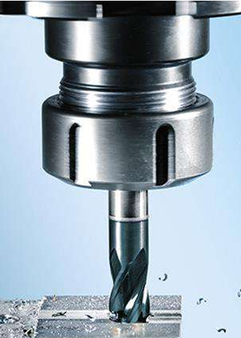
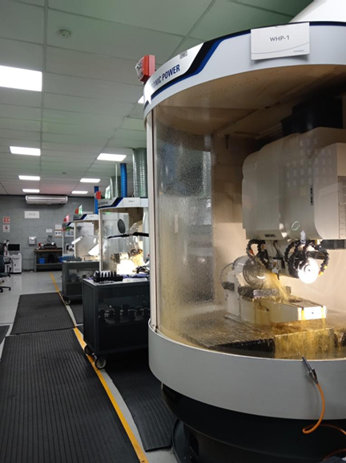
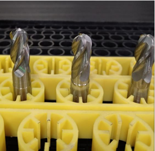
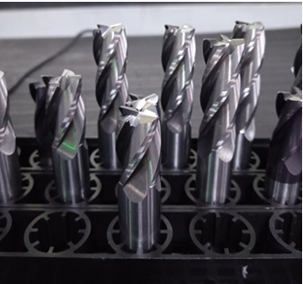
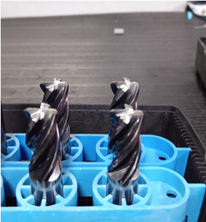
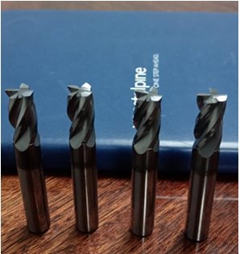

Servicio Profesional de Afilado Industrial
En Grupo Ancor ofrecemos afilado de precisión para herramientas de corte en acero, asegurando un filo duradero y eficaz. Utilizamos maquinaria avanzada y técnicas en frío para preservar las propiedades del acero y maximizar la productividad.
- Afilado de cuchillas, fresas, brocas, sierras y herramientas personalizadas.
- Preservación del ángulo y dureza original del acero.
- Inspección visual, pulido y control de calidad incluidos.
- Servicio con recogida y entrega programada para su comodidad.


Importancia del afilado regular
Mantener las herramientas bien afiladas:
- 🔧 Aumenta la productividad y la calidad del corte. :contentReference[oaicite:2]{index=2}
- 🛠️ Reduce costos en reemplazos y tiempo de inactividad. :contentReference[oaicite:3]{index=3}
- ♻️ Es una práctica sostenible en comparación a comprar piezas nuevas. :contentReference[oaicite:4]{index=4}
- ✅ Mejora la seguridad: superficies de corte más estables y controladas. :contentReference[oaicite:5]{index=5}
Cómo realizamos el afilado
Utilizamos máquinas de rectificado industrial con sistemas CNC y ruedas abrasivas de alta precisión:
- Control exacto de ángulos y alimentación (chip load). :contentReference[oaicite:6]{index=6}
- Enfriamiento refrigerado para evitar pérdida de dureza.
- Uso de medios abrasivos de alta calidad para acabado fino.
Equipo de medicion de la marca zoller Pom Basic
Equipo Zoller Basic para la medición manual y rápida, donde se inspecciona una a una de las herramientas para detectar posibles desgastes o despostillamientos.


Reporte y medición en máquina cnc Helicheck Pro
Los reportes se emiten con las tolerancias que el cliente solicite como son: ángulos, radios, distancias, diámetros etc, estos son generados en la máquina de inspección Helicheck Pro.


Afilado en diferentes geometrías de cortadores o end mills

Ball nose o esférico

on chaflan

Con radio

Rectos o planos
Las medidas o tolerancias van en función de las necesidades del cliente, de igual manera se pueden transformar de rectos a esféricos o de cualquier geometría solicitada.
Fabricación de cortadores en medidas métricos o imperiales con medidas de acuerdo a solicitudAfilado en de brocas rectas o escalonadas con perfiles

Broca recta

Broca escalonada
Reafilado de brocas rectas, escalonadas o con perfil en el escalón o chaflan.
Geometrías radiales, hertel o facetas en brocas

Afilado en facetas

Radial o estándar

Afilado tipo hertel 2 o 3 filos
Reafilado de brocas en diferentes geometrías para las diferentes necesidades de trabajo o material a maquinar.
Software de simulación


Toda la programación antes del afilado o fabricación es simulada en software tool studio para evitar posibles errores.


 proyecto@grupoindustrialancor.com
proyecto@grupoindustrialancor.com
 grupoindustrialancor.com
grupoindustrialancor.com
 5527841859
5527841859
proyecto@grupoindustrialancor.comgrupoindustrialancor.com5527841859